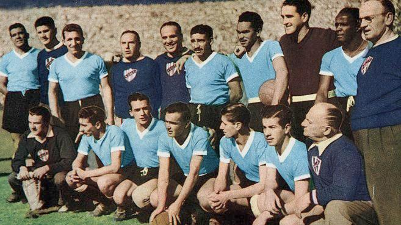
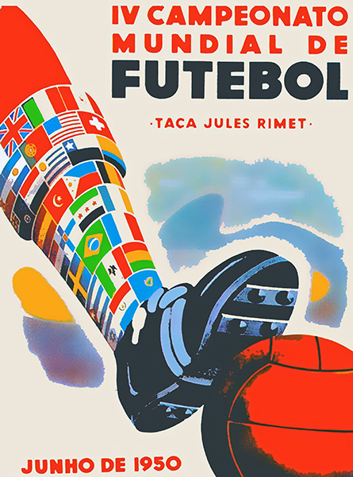
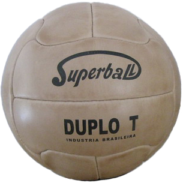
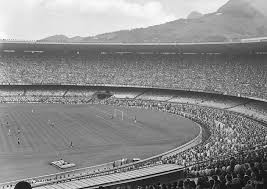
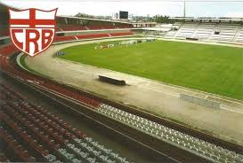
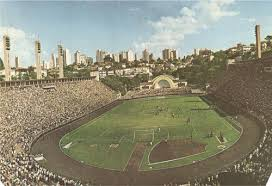
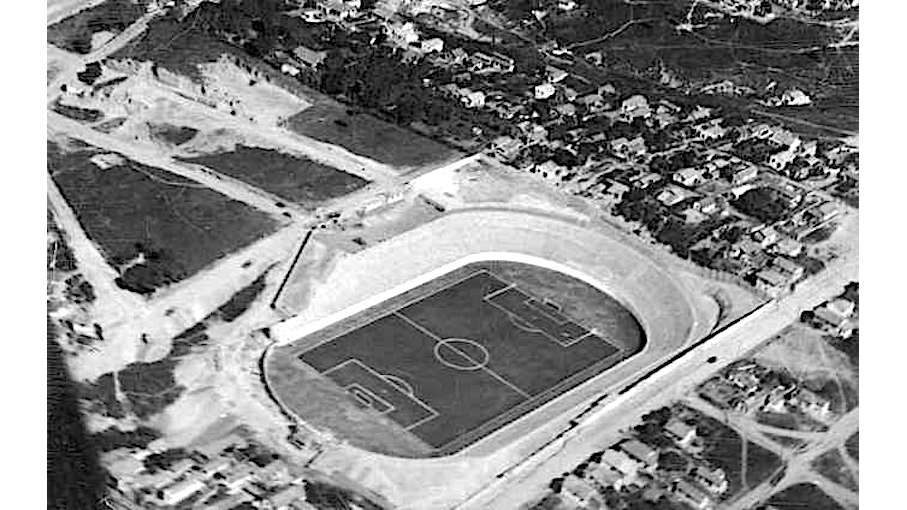
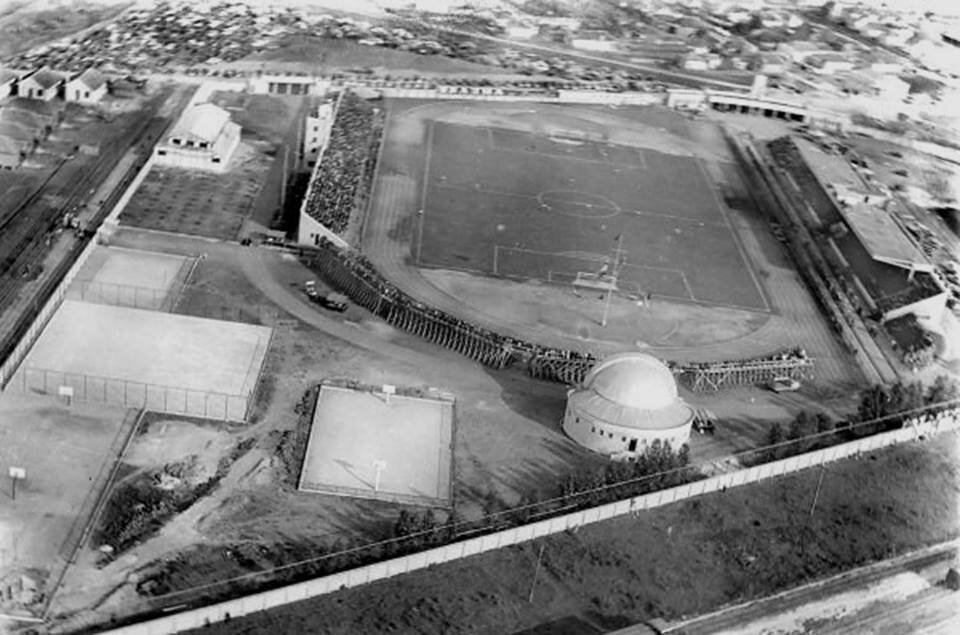
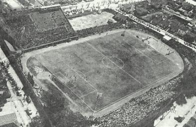
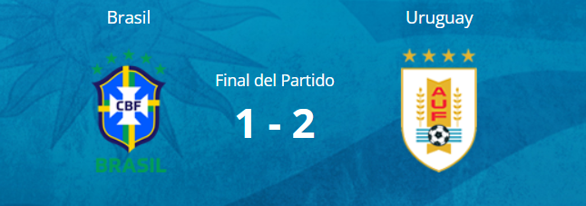

Seleccion Campeona del Mundo

Poster oficial del Mundial de Brasil 1950

Trofeo del Mundial de Brasil 1950

Album de cromos del Mundial de Brasil 1950

Balón oficial del Mundial de Brasil 1950


Seleccion Campeona del Mundo

Poster oficial del Mundial de Brasil 1950

Trofeo del Mundial de Brasil 1950
Album de cromos del Mundial de Brasil 1950
Balón oficial del Mundial de Brasil 1950

Participantes

Estadisticas del Mundial de Brasil
Estadios del Mundial de Brasil 1950
Río de Janeiro: estadio Maracaná

Recife: Estadio Ilha do Retiro

São Paulo: Estadio Pacaembú

Belo Horizonte: Estadio Independência

Curitiba: Estadio Durival de Britto e Silva

Porto Alegre: Estadio Eucaliptos
Final del Mundial de Brasil 1950

Datos relevantes del mundial